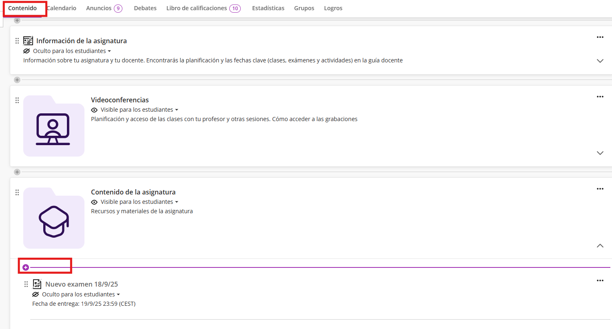
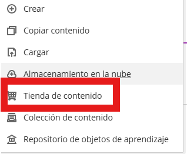
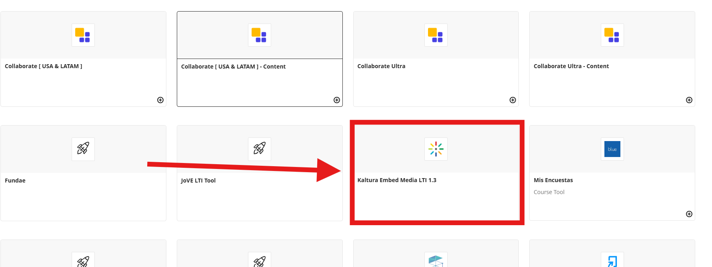
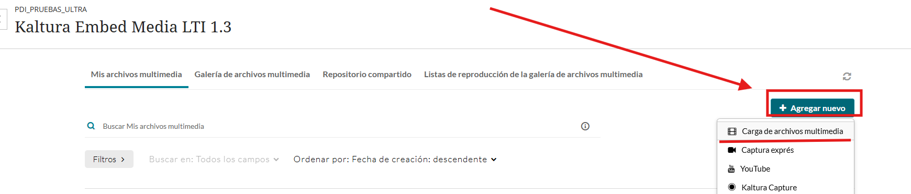
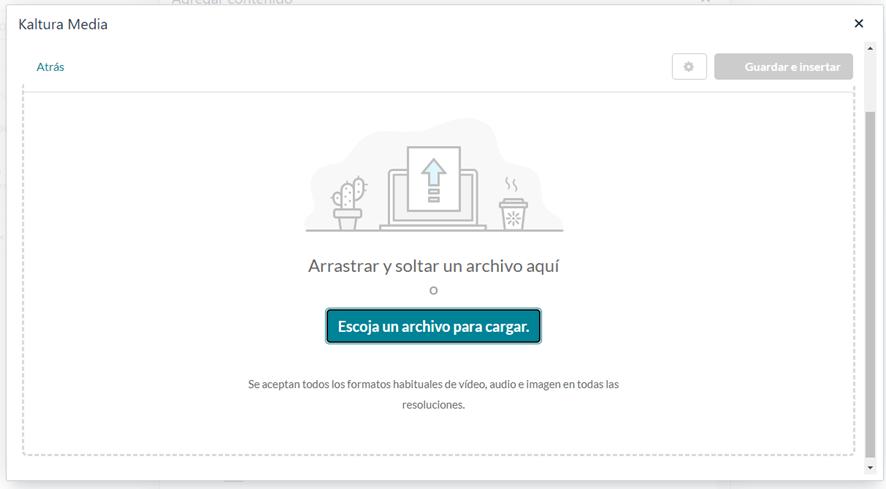
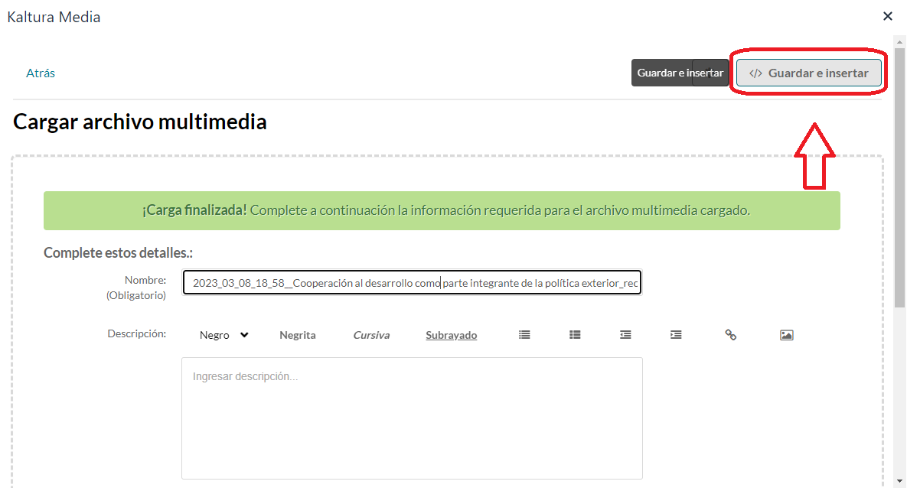
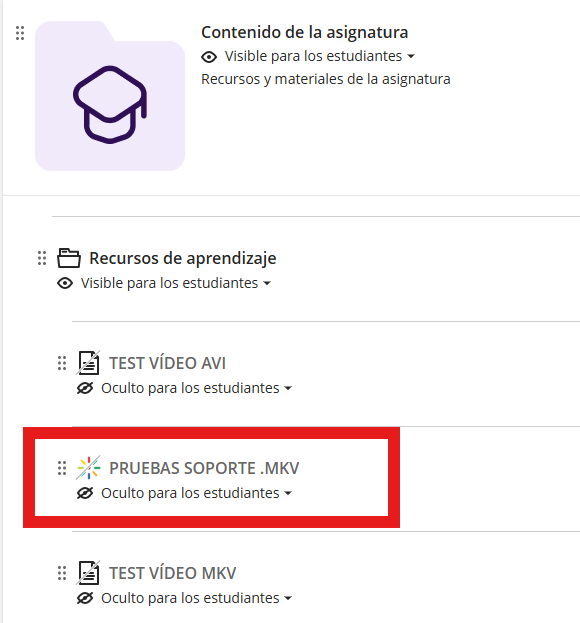
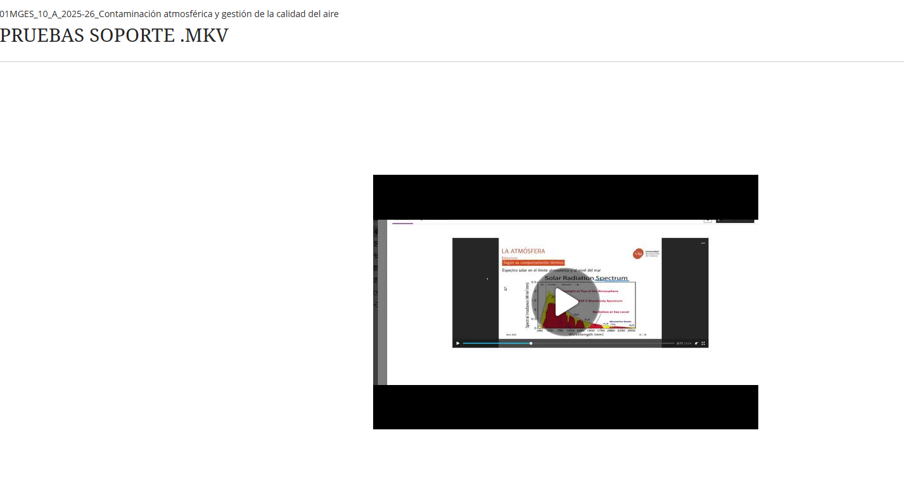

Subir video con Kaltura Media
Guía para la carga e inserción de contenido multimedia mediante el LTI de Kaltura.
Accedemos a la sección de “Contenido”, seleccionamos donde deseamos posicionar el video y pulsamos en el “+”.

Seleccionamos “Tienda de contenido”:

Buscamos y seleccionamos “Kaltura Embed Media LTI 1.3”.

Dentro de la herramienta, pulsamos en “+ Agregar nuevo” y elegimos “Carga de archivos multimedia”.

Pulsamos en “Escoja un archivo para cargar” y localizamos en nuestro equipo el video que deseamos subir.

Progreso: Espere a que la barra de carga se complete totalmente antes de continuar.
Una vez subido, seleccionamos “</> Guardar e insertar” y esperamos unos segundos a que el sistema procese la acción.

Visualización en el Aula
El video aparecerá listado como un elemento más dentro de su contenido:

Al interactuar con el elemento, el reproductor se integrará automáticamente en la interfaz, permitiendo una visualización fluida y directa sin necesidad de salir del aula virtual.

Recomendación: Se aconseja utilizar siempre esta herramienta para insertar videos propios alojados en su ordenador, garantizando así la compatibilidad y el rendimiento óptimo del reproductor.
⚠️ Advertencia de compatibilidad: Se ha detectado que los vídeos de Kaltura pueden dar problemas de reproducción en los teléfonos móviles de Apple (iPhone) y en las tablets de Apple (iPad).
Este contenido funciona correctamente en cualquier ordenador (ya sea Mac o Windows) y en el resto de móviles y tablets (Android).
Hecho por Jose F. © 2026